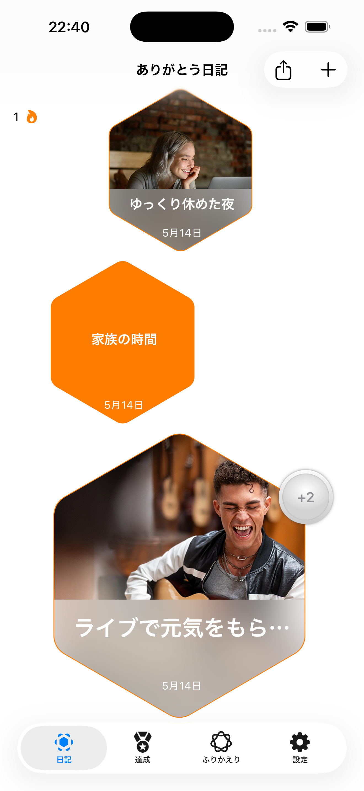
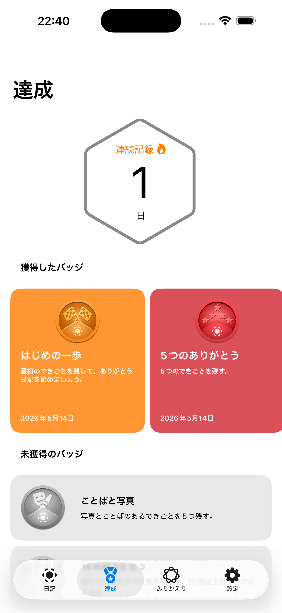
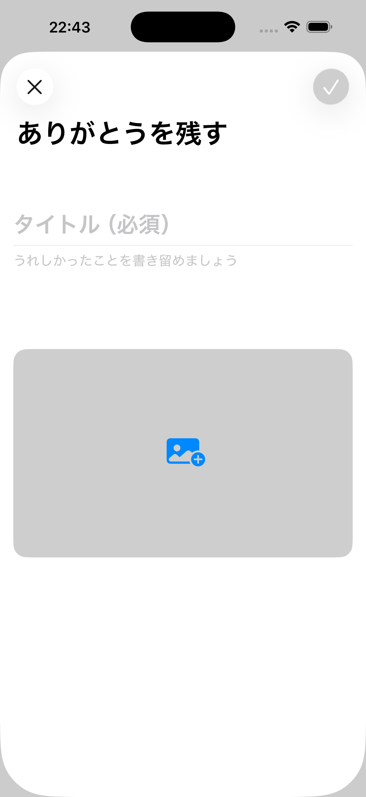

Record gently
Save titles, notes, and photos for the everyday moments you want to remember.
Capture moments of gratitude with notes and photos, build a steady habit with streaks and badges, and keep your memories on your device.



Save titles, notes, and photos for the everyday moments you want to remember.
Streaks and achievement badges help make gratitude a visible, encouraging routine.
Your entries stay on your device. There are no ads, and exports happen only when you choose PDF or CSV.
Need help or want to send feedback?
Learn how the app handles journal entries, photos, purchases, and exports.
This app uses Apple's standard end user license agreement.